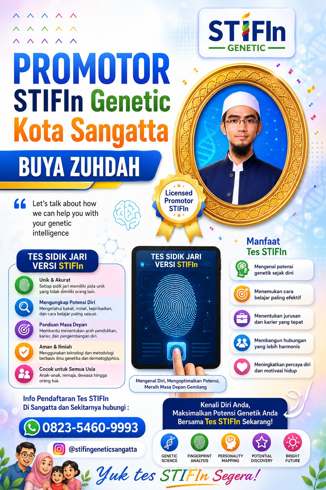
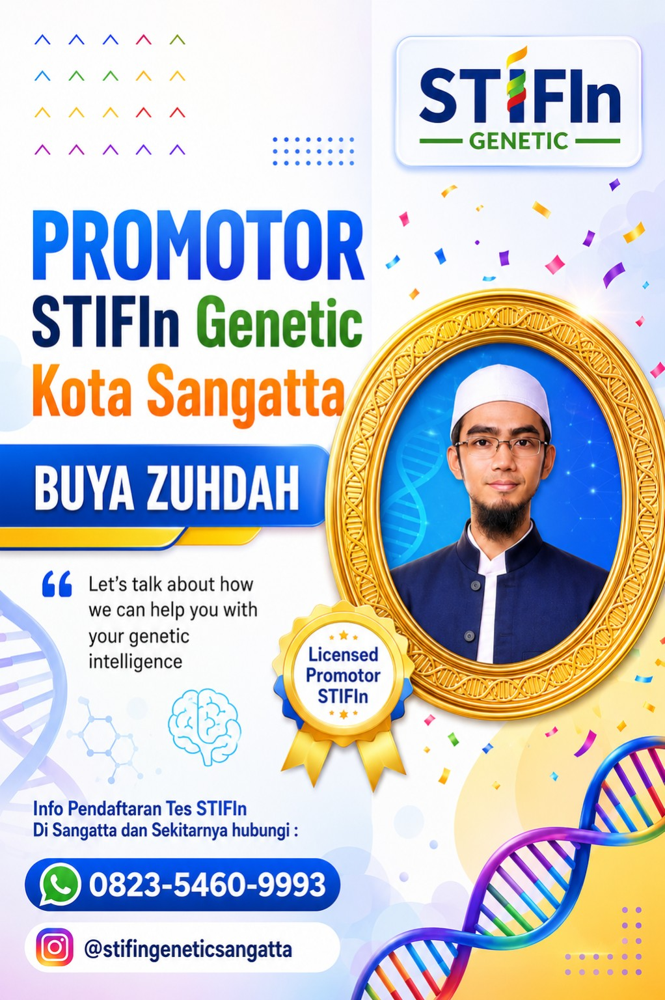
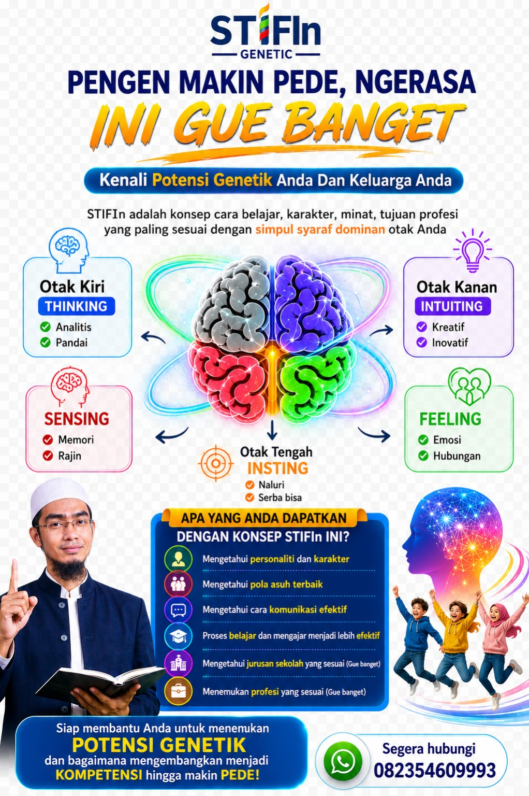
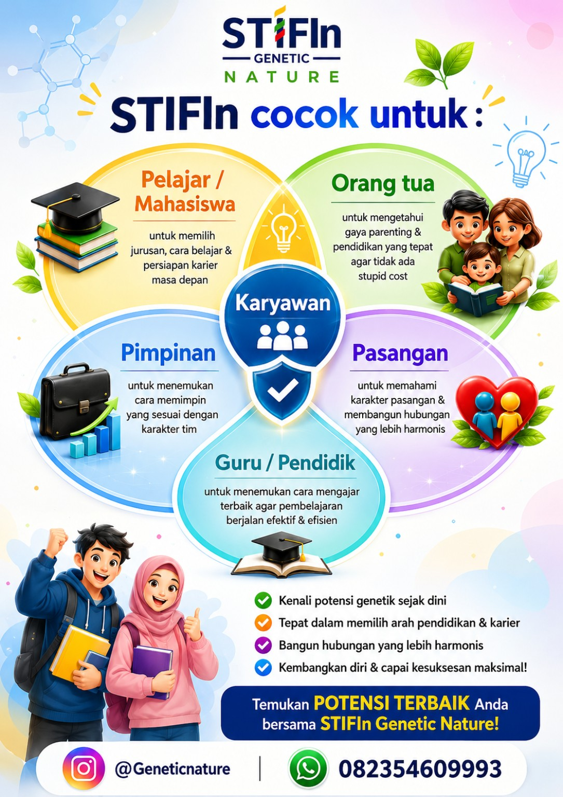
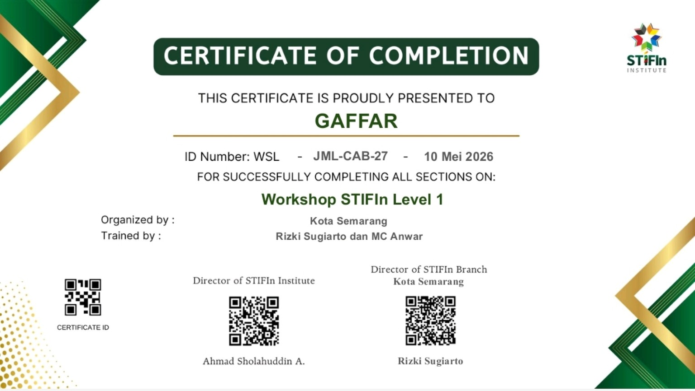
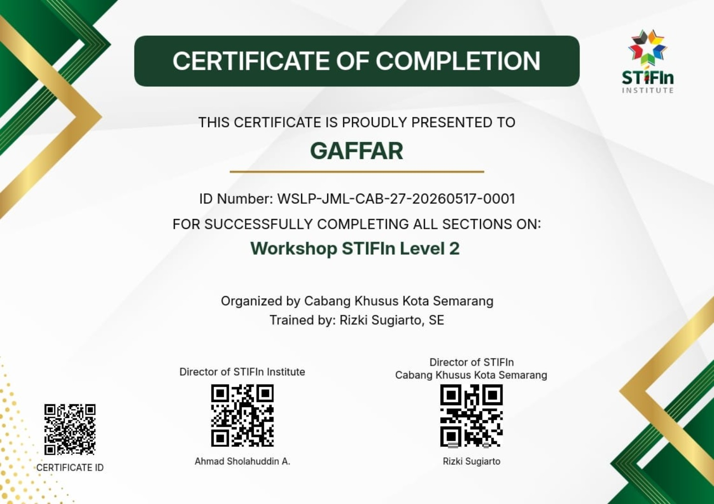

S
S
Sensing
Fokus pada pengalaman nyata, fakta, detail, keteraturan dan tindakan praktis.
Pelajari pemetaan potensi dan kecenderungan diri untuk membantu Anda memahami cara belajar, komunikasi, pengembangan diri, pendidikan, dan arah karier.
📍 Sangatta & sekitarnya • 📞 0823-5460-9993

Saksikan penjelasan singkat sebelum Anda berkonsultasi.
Kenali potensi diri dengan paket promo yang lebih hemat.
Hubungi WhatsApp untuk mendapatkan jadwal dan informasi pendaftaran terbaru.
STIFIn adalah konsep pemetaan kecenderungan mesin kecerdasan untuk membantu seseorang memahami dirinya sebagai bahan refleksi dalam belajar, komunikasi, pengembangan diri, keluarga, dan karier.
Setiap mesin ditampilkan dengan warna identitasnya dan emblem visual berbasis CSS, sehingga halaman tidak membutuhkan file gambar tambahan.
Fokus pada pengalaman nyata, fakta, detail, keteraturan dan tindakan praktis.
Menonjol pada logika, analisis, objektivitas, struktur dan pemecahan masalah.
Menonjol pada ide, kemungkinan, visi, kreativitas dan melihat gambaran besar.
Memperhatikan hubungan, nilai, empati, harmoni dan dinamika perasaan.
Cenderung spontan, adaptif, menyeluruh dan cepat membaca situasi.
Catatan: uraian di atas adalah penjelasan ringkas untuk edukasi. Hasil tes sebaiknya dipahami sesuai penjelasan promotor dan tidak digunakan sebagai satu-satunya dasar keputusan penting.
Bahan memahami perbedaan kecenderungan dan membangun komunikasi.
Bahan refleksi untuk memahami gaya belajar dan pengembangan potensi.
Bahan pertimbangan dalam pengembangan diri dan arah karier.
Membantu menyusun refleksi dan langkah pengembangan yang lebih terarah.
Isi data singkat di bawah. Setelah menekan tombol, WhatsApp akan terbuka dengan format pesan pendaftaran yang sudah disiapkan.
Beberapa pertanyaan yang sering muncul sebelum mendaftar.
Dapat digunakan sebagai bahan refleksi untuk diri sendiri, anak/orang tua, pelajar, mahasiswa, keluarga, guru, maupun pengembangan karier.
Tidak. Anda dapat berkonsultasi terlebih dahulu melalui WhatsApp untuk memahami proses, jadwal, dan paket.
Harga normal Rp650.000 dan harga promo yang ditampilkan di landing page adalah Rp500.000, sesuai paket dan ketersediaan program.
Free sesi penjelasan/konsultasi, free sesi tanya jawab, E-Sertifikat, dan free E-Book Personality Genetik sesuai penawaran yang tercantum.
Isi form pendaftaran atau hubungi WhatsApp promotor. Jadwal dikonfirmasi secara langsung.
Gunakan panel sederhana ini untuk mencatat calon peserta di perangkat Anda. Data tersimpan lokal di browser, bukan di server.
Privasi: fitur ini menggunakan localStorage. Data hanya tersimpan pada browser/perangkat yang digunakan dan tidak otomatis terkirim ke Anda.
Isi data singkat di bawah. Setelah menekan tombol, WhatsApp akan terbuka dengan pesan pendaftaran yang sudah disiapkan.
Gunakan hasil pemetaan sebagai bahan refleksi dan pengembangan diri, bukan sebagai label yang membatasi.
Mengenali kecenderungan dan potensi diri sebagai bahan memahami diri lebih baik.
Mengeksplorasi cara belajar yang terasa lebih sesuai dengan karakter pribadi.
Bahan diskusi untuk mempertimbangkan pilihan pendidikan dan pengembangan kompetensi.
Mendukung refleksi tentang kekuatan dan arah pengembangan profesional.
Membuka sudut pandang baru untuk memahami perbedaan gaya komunikasi.
Menjadi bahan memahami diri dan orang lain agar interaksi lebih harmonis.
Temukan konteks yang paling relevan untuk Anda atau keluarga.
Eksplorasi gaya belajar, pilihan pendidikan dan persiapan masa depan.
Bahan memahami karakter anak dan mendampingi proses belajar.
Refleksi kekuatan diri, komunikasi dan pengembangan kompetensi.
Wawasan tentang perbedaan karakter dan gaya komunikasi dalam tim.
Membantu memahami perbedaan karakter dan membangun komunikasi.
Eksplorasi pendekatan pembelajaran dan komunikasi yang beragam.
Lihat dokumentasi video yang Anda berikan sebagai bahan pertimbangan sebelum berkonsultasi.
Dokumentasi video yang menampilkan Tes STIFIn bersama keluarga.
Video mengenai hasil Tes STIFIn dalam konteks tokoh agama dan parenting.
Dokumentasi video bertema STIFIn Family dan pengenalan potensi.
Mengenal diri dapat menjadi langkah awal untuk membuat proses belajar, komunikasi, dan pengembangan diri lebih terarah.
Memahami kecenderungan diri sebagai bahan refleksi untuk mengenali kekuatan dan area pengembangan.
Hasil pemetaan dapat menjadi salah satu bahan diskusi untuk pendidikan dan pengembangan karier.
Membuka perspektif bahwa setiap orang dapat memiliki kecenderungan dan cara berinteraksi yang berbeda.
Pilih kebutuhan yang paling dekat dengan Anda.
Mengenali kecenderungan diri sebagai bahan refleksi untuk pengembangan pribadi.
Bahan diskusi untuk memahami perbedaan kecenderungan dalam keluarga.
Bahan pertimbangan untuk belajar dan pengembangan potensi.
Bahan refleksi untuk mengenali kecenderungan dan arah pengembangan diri.
Membuka ruang komunikasi dan pemahaman terhadap perbedaan.
Bahan diskusi untuk memahami karakter dan kebutuhan peserta didik.
Silakan tanyakan proses, jadwal, paket promo, dan hal lain yang ingin Anda ketahui melalui WhatsApp.
Dari konsultasi sampai mendapatkan hasil, semuanya dibuat mudah dipahami.
Tanyakan proses, paket, dan jadwal melalui WhatsApp.
Isi data singkat dan tentukan jadwal yang tersedia.
Ikuti proses tes sesuai jadwal yang telah disepakati.
Dapatkan sesi penjelasan/konsultasi dan tanya jawab.
Promo Rp500.000 sudah dilengkapi fasilitas pendampingan dan materi digital.
Anda mendapatkan ruang untuk bertanya dan memahami proses sebelum menentukan pilihan.
Dapat berkonsultasi mengenai proses dan pendaftaran.
Free sesi penjelasan/konsultasi sesuai paket promo.
Ruang untuk bertanya setelah mendapatkan penjelasan.
Mendapatkan E-Sertifikat sesuai paket yang ditawarkan.
Free E-Book Personality Genetik.
Mudah menghubungi promotor untuk jadwal dan pendaftaran terbaru.
Hubungi promotor untuk mendapatkan informasi jadwal Tes STIFIn terbaru di Sangatta dan sekitarnya.
Anda boleh berkonsultasi terlebih dahulu sebelum memutuskan mengikuti tes. Kami membantu memberikan informasi tentang proses, paket, jadwal, dan pendaftaran.
Beberapa pertanyaan yang sering ditanyakan sebelum mendaftar.
Tes STIFIn adalah alat pemetaan kepribadian berbasis konsep kecenderungan sistem operasi otak. Hasilnya dapat digunakan sebagai bahan refleksi dan pengembangan diri.
Pelajar, mahasiswa, orang tua, pendidik, karyawan, pasangan, maupun individu yang ingin mengenal kecenderungan dirinya dapat berkonsultasi.
Hubungi WhatsApp promotor untuk mendapatkan informasi jadwal, ketersediaan sesi, dan langkah pendaftaran.
Paket promo Rp500.000 mencakup Tes STIFIn, free sesi penjelasan/konsultasi, free sesi tanya jawab, E-Sertifikat, dan free E-Book Personality Genetik.
Tekan tombol WhatsApp dan kirim pesan pendaftaran. Promotor akan memberikan informasi jadwal terbaru.
Visual promosi dan identitas STIFIn Nature Sangatta.



Siap membantu Anda memahami informasi tentang Tes STIFIn, proses pendaftaran, dan konsultasi awal di Sangatta dan sekitarnya.
Dapatkan informasi dan pendampingan sebelum mengikuti tes.
Memahami karakteristik utama dapat membantu Anda membaca kecenderungan diri, cara belajar, cara berkomunikasi, serta bahan pertimbangan untuk pengembangan diri.
Berorientasi pada hal yang sesuai jangkauan pancaindra dan kuat pada pengalaman konkret.
Mengandalkan pikiran logis, cenderung adil, objektif dan efektif dalam mengolah persoalan.
Berpikir jangka panjang, kreatif, inovatif dan terkonsep, dengan perhatian pada gagasan serta kemungkinan.
Mengandalkan perasaan dan mengutamakan rasa, dengan kekuatan pada hubungan serta komunikasi.
Cenderung spontan, pragmatis, serba bisa dan rela berkorban, dengan kemampuan adaptasi yang kuat.
Materi presentasi menghubungkan pengenalan Mesin Kecerdasan dengan cara belajar, cara berinteraksi, serta bahan pertimbangan sekolah dan karier.
Materi presentasi menyediakan contoh pilihan sekolah dan karier untuk masing-masing mesin. Di website ini contoh tersebut disajikan ringkas agar pengunjung tertarik membaca lebih lanjut bersama promotor.
Landing page ini tidak dimaksudkan untuk menentukan seseorang hanya dari satu label. Gunakan informasi sebagai bahan memahami diri dan berdiskusi lebih lanjut berdasarkan hasil tes.
Setelah mengenal 5 Mesin Kecerdasan, Anda dapat melanjutkan ke proses konsultasi untuk memahami hasil Tes STIFIn dan menghubungkannya dengan belajar, komunikasi, pengembangan diri, serta arah pendidikan atau karier.
Mulai dengan memahami konsep 5 Mesin Kecerdasan dan karakteristik yang dijelaskan dalam materi STIFIn.
Dapatkan hasil pemetaan STIFIn sebagai bahan untuk memahami kecenderungan mesin kecerdasan Anda.
Bahas hasilnya bersama promotor agar informasi tidak berhenti pada label, tetapi menjadi bahan refleksi.
Gunakan pemahaman tersebut sebagai salah satu bahan pertimbangan untuk belajar, berkomunikasi dan berkembang.
Untuk membangun kepercayaan calon klien, dokumentasi pelatihan ditampilkan sebagai bukti bahwa promotor mengikuti workshop STIFIn yang tercantum pada sertifikat.
Mulai dari pertanyaan sederhana. Konsultasikan Tes STIFIn terlebih dahulu, lalu tentukan langkah berikutnya dengan lebih tenang.
Mulai dengan mengenal diri, berdiskusi dan menentukan langkah pengembangan yang relevan untuk Anda.
📲 KONSULTASI & PENDAFTARANKenali pendamping Anda sebelum berkonsultasi dan mendaftar.

✓ Workshop STIFIn Level 1Dokumen yang ditampilkan sebagai bukti penyelesaian Workshop STIFIn Level 1 dari STIFIn Institute.

✓ Workshop STIFIn Level 2Dokumen yang ditampilkan sebagai bukti penyelesaian Workshop STIFIn Level 2 dari STIFIn Institute.
Video dokumentasi kegiatan layanan Tes STIFIn.
Informasi dibuat transparan agar Anda dapat memahami layanan sebelum menentukan pilihan.
Mengenali kecenderungan mesin kecerdasan sebagai bahan refleksi untuk pengembangan diri.
Peserta dapat memperoleh sesi penjelasan dan tanya jawab sesuai paket yang ditawarkan.
Informasi jadwal dan pendaftaran dapat dikonfirmasi langsung melalui WhatsApp.
Layanan informasi, konsultasi, dan pendaftaran tes STIFIn di Sangatta. Silakan berkonsultasi terlebih dahulu untuk memahami proses dan pilihan layanan.
Konsultasikan kebutuhan Anda terlebih dahulu. Tidak perlu terburu-buru menentukan pilihan.
💬 Konsultasi via WhatsAppBerdasarkan eBook 9 Personaliti Genetik, konsep STIFIn berangkat dari dua pertanyaan utama: di mana belahan otak yang dominan dan pada lapisan mana dominasi tersebut berada. Dari kerangka itu, STIFIn membahas 5 Mesin Kecerdasan dan 9 personaliti genetik.
Hasil STIFIn dalam eBook dijelaskan dapat digunakan untuk memahami berbagai aspek diri seperti cara belajar, kecenderungan bekerja, pilihan profesi, kekuatan dan area yang perlu dikembangkan, serta pola berhubungan.
Dalam kerangka eBook, kelima belahan otak tetap bekerja bersama secara harmonis, sementara satu sistem operasi berperan sebagai pemimpin. Karena itu, landing page ini tidak akan menjual hasil tes sebagai “label manusia”, tetapi sebagai bahan untuk memahami kecenderungan dan menentukan langkah pengembangan yang lebih sesuai.
Tujuannya: membantu Anda mendapatkan gambaran “gua banget” yang kemudian dapat didiskusikan bersama promotor.
Untuk S, T, I, dan F, eBook menjelaskan dua kemudi: introvert (i) dan extrovert (e). Insting (In) menjadi pengecualian karena tidak memiliki kemudi i/e.
Belajar banyak melalui pengulangan, pengalaman langsung, visual, dan gerak.
Cenderung kuat pada pengalaman, latihan, visual, dan pembelajaran langsung.
Menekankan penalaran mendalam, spesialisasi, sistem, dan efektivitas.
Dalam eBook diarahkan pada nalar, kemandirian, dan penerapan yang meluas.
Berbasis intuisi dengan proses dari dalam menuju luar; eksplorasi ide menjadi bagian penting.
Berbasis intuisi dengan proses dari luar menuju dalam; ruang peluang dan gagasan menjadi perhatian.
Berbasis emosi/perasaan dan proses dari dalam menuju luar.
Dalam eBook, diskusi interaktif dan komunikasi menjadi bagian penting cara belajar.
Kepribadian genetik sekaligus Mesin Kecerdasan; bekerja otomatis dan tidak memiliki kemudi i/e.
Jangan menebak diri sendiri hanya dari konten media sosial. Lakukan Tes STIFIn, kemudian gunakan hasilnya sebagai bahan konsultasi untuk memahami cara belajar, pengembangan diri, hubungan, serta arah pendidikan atau profesi.
💬 Konsultasi & Daftar Tes STIFInSetiap orang datang dengan kebutuhan yang berbeda. Pilih area yang paling dekat dengan kebutuhan Anda, lalu konsultasikan langkah berikutnya bersama promotor.
Memahami kecenderungan anak sebagai bahan refleksi untuk mendampingi proses belajar, komunikasi, dan pengembangan potensinya.
💬 Konsultasi AnakMengenal kecenderungan belajar sebagai salah satu bahan pengembangan diri dalam pendidikan.
💬 Konsultasi PendidikanMemahami kecenderungan diri sebagai bahan refleksi dalam komunikasi, pengembangan kapasitas, dan aktivitas kerja.
💬 Konsultasi ProfesionalMembuka ruang percakapan tentang perbedaan kecenderungan dan cara berkomunikasi yang lebih sesuai.
💬 Konsultasi KeluargaMateri STIFIn dapat menjadi bahan edukasi untuk memahami variasi kecenderungan peserta didik dan pendekatan komunikasi.
💬 Konsultasi LembagaMenggunakan pemahaman kecenderungan sebagai salah satu bahan diskusi tentang komunikasi dan kerja sama tim.
💬 Konsultasi TimLanding page ini membantu calon peserta memahami konsep STIFIn terlebih dahulu, melihat kredibilitas promotor, kemudian memilih langkah konsultasi yang sesuai.
Pelajari konsep 5 Mesin Kecerdasan dan 9 Personaliti Genetik.
Hubungkan pemahaman dengan kebutuhan belajar, diri, keluarga, atau pekerjaan.
Lihat bukti pelatihan dan dokumentasi promotor sebelum berkonsultasi.
Hubungi promotor untuk mengetahui proses dan jadwal Tes STIFIn.
Gunakan pemahaman kecenderungan sebagai bahan refleksi untuk mencari pendekatan belajar yang lebih sesuai.
Eksplorasi kecenderungan yang berkaitan dengan pilihan pendidikan, aktivitas, dan bidang profesi.
Pahami adanya perbedaan kecenderungan sebagai bahan membangun komunikasi dan hubungan yang lebih baik.
Calon klien dapat melihat materi edukasi, bukti pelatihan, dan dokumentasi sebelum mengambil keputusan.
Halaman ini mengarahkan Anda untuk memahami proses terlebih dahulu, kemudian melakukan konsultasi sebelum menentukan pendaftaran.
Paket promo yang ditampilkan di landing page. Untuk jadwal, ketersediaan, detail layanan, dan ketentuan terbaru, silakan konfirmasi langsung melalui WhatsApp.
💬 TANYA & DAFTAR VIA WHATSAPPTidak. Landing page ini membantu memahami gambaran dasarnya terlebih dahulu. Jika masih bingung, Anda dapat berkonsultasi sebelum mendaftar.
Gunakan hasil sebagai bahan pemahaman dan refleksi, bukan satu-satunya dasar keputusan penting. Konsultasikan konteks dan kebutuhan Anda dengan tepat.
Klik tombol WhatsApp dan sampaikan kebutuhan Anda—anak, pendidikan, diri, keluarga, profesi, sekolah/pesantren, atau tim—agar dapat diarahkan ke informasi yang relevan.
Tidak semua orang datang dengan pertanyaan yang sama. Pilih kebutuhan yang paling dekat dengan Anda, lalu gunakan WhatsApp untuk berkonsultasi sebelum menentukan langkah berikutnya.
Mulai mengenal Mesin Kecerdasan dan Personaliti Genetik sebagai bahan refleksi tentang diri dan pengembangan pribadi.
💬 Mulai Konsultasi DiriMendapatkan informasi untuk membantu orang tua berdiskusi tentang belajar, komunikasi, dan pengembangan potensi anak.
💬 Konsultasi AnakUntuk pelajar, mahasiswa, sekolah, atau pesantren yang ingin mengeksplorasi pendekatan belajar dan komunikasi.
💬 Konsultasi PendidikanEksplorasi informasi tentang kecenderungan diri yang dapat menjadi bahan pertimbangan dalam pendidikan dan profesi.
💬 Konsultasi KarierMembuka ruang memahami perbedaan kecenderungan sebagai bahan membangun komunikasi dan hubungan yang lebih baik.
💬 Konsultasi KeluargaUntuk komunitas, tim, atau organisasi yang ingin berdiskusi tentang komunikasi, kerja sama, dan pengembangan anggota.
💬 Konsultasi TimTidak masalah. Ceritakan saja kondisi atau tujuan Anda. Kami bantu mengarahkan percakapan awal agar Anda mendapatkan informasi yang paling relevan sebelum mendaftar.
💬 CERITAKAN KEBUTUHAN SAYASebelum mengambil keputusan, calon klien dapat melihat informasi edukasi, dokumentasi pelatihan, dan video yang tersedia di landing page. Tujuannya membangun kepercayaan melalui informasi yang dapat dilihat.
Memahami 5 Mesin Kecerdasan dan 9 Personaliti Genetik sebelum berkonsultasi.
Dokumentasi sertifikat workshop promotor ditampilkan sebagai bagian dari kredibilitas.
Video kegiatan dan testimoni tersedia agar calon klien dapat melihat pengalaman yang ditampilkan.
Calon klien dapat bertanya terlebih dahulu sebelum menentukan pendaftaran.
Gunakan bagian ini untuk memperlihatkan bukti pelatihan dan dokumentasi yang memang Anda miliki.
Identitas landing page diarahkan pada pengalaman yang edukatif, natural, profesional, dan mudah diakses melalui HP.
Video ditempatkan sebagai social proof visual tanpa membuat klaim yang tidak didukung oleh dokumentasi.
Video testimoni yang sudah dimasukkan ke landing page.
Video testimoni untuk membantu calon klien mengenal pengalaman yang ditampilkan.
Video dokumentasi/testimoni yang tersedia di folder website.
Kenali konsepnya. Lihat informasinya. Tanyakan kebutuhan Anda. Setelah mendapatkan informasi yang cukup, Anda dapat menentukan apakah ingin melanjutkan ke Tes STIFIn.
💬 SAYA MAU KONSULTASI DULUSetelah memahami konsep STIFIn, Anda dapat melihat penawaran berikut dan mengonfirmasi detail layanan langsung melalui WhatsApp sebelum melakukan pendaftaran.
Harga promo yang digunakan pada proyek landing page. Detail paket, jadwal, ketersediaan, dan ketentuan layanan dikonfirmasi sebelum pendaftaran.
Sensing, Thinking, Intuiting, Feeling, dan Insting sebagai bagian dari edukasi STIFIn.
Memahami struktur personaliti dalam kerangka STIFIn sebagai bahan pembahasan.
Diskusikan kebutuhan dan detail layanan sebelum memutuskan pendaftaran.
Jika masih ada yang ingin ditanyakan tentang STIFIn, paket, jadwal, atau prosesnya, silakan konsultasi terlebih dahulu. Anda tidak harus langsung mendaftar.
💬 SAYA MAU TANYA DULUHarga yang ditampilkan adalah harga promo yang digunakan pada landing page. Mohon konfirmasi langsung melalui WhatsApp untuk memastikan harga, jadwal, dan ketentuan terbaru.
Landing page ini tidak mengunci fasilitas yang belum dikonfirmasi. Detail fasilitas paket akan disampaikan dan dikonfirmasi langsung sebelum pendaftaran.
Boleh. Justru calon klien diarahkan untuk bertanya dan memahami proses terlebih dahulu sebelum menentukan pendaftaran.